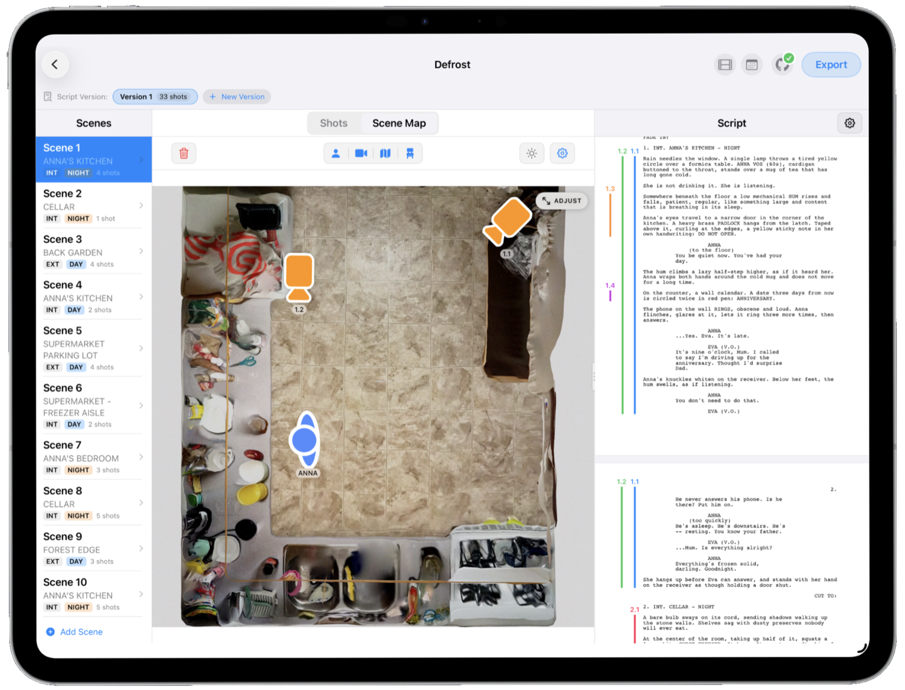
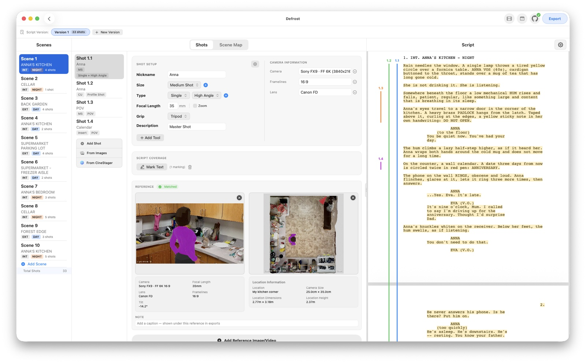
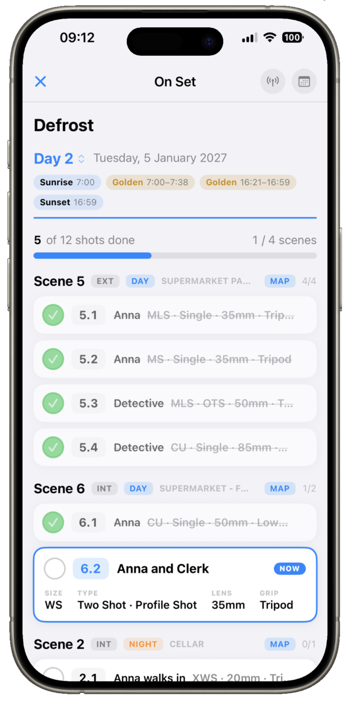
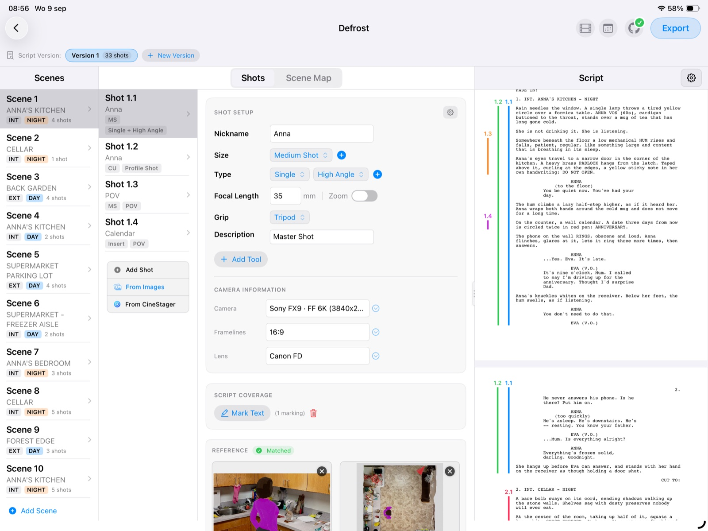
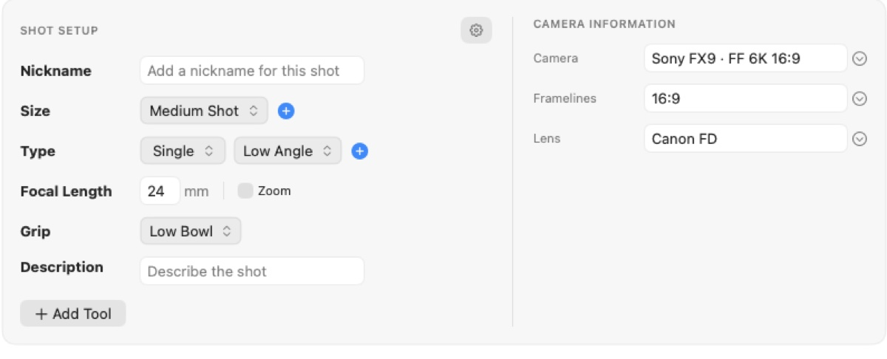
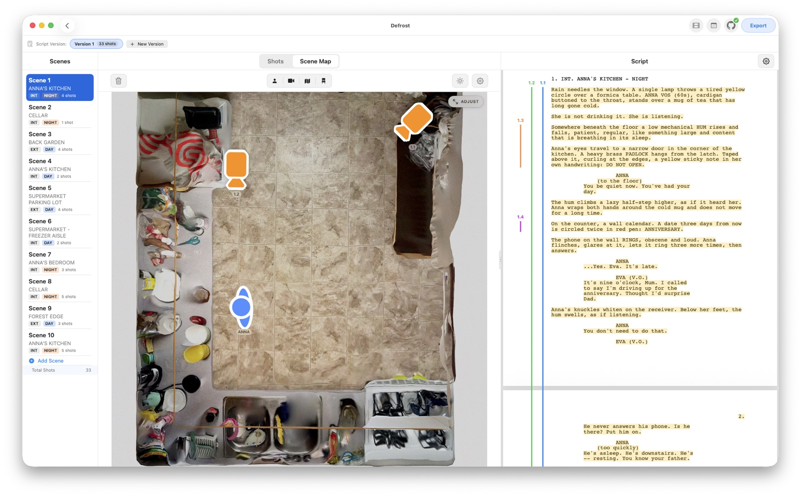
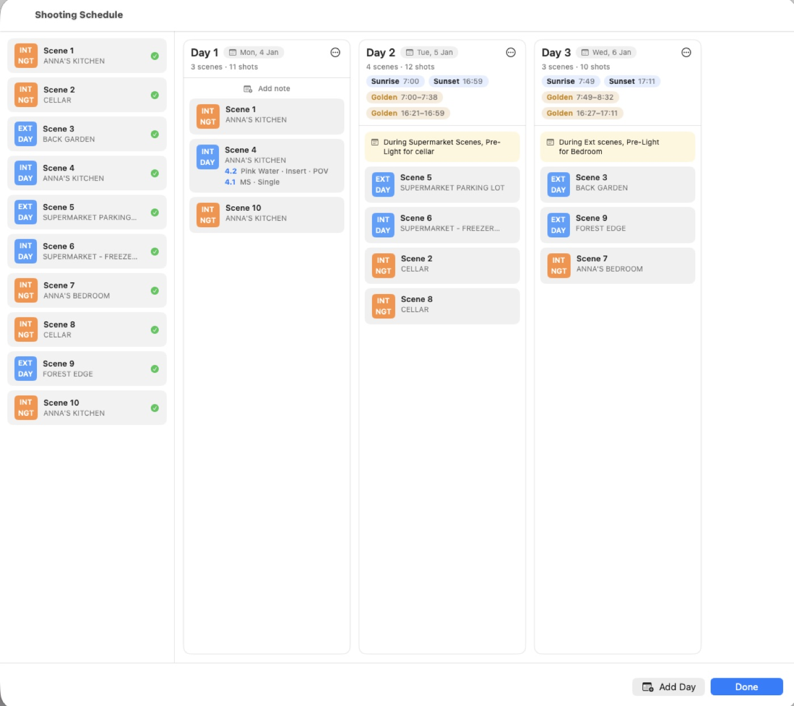

CINEPLANNER
From script to set —in one app.
Read your script beside your shot list, block scenes on a map, and carry the whole plan onto set — live.



Scroll
Read your script beside your shot list, block scenes on a map, and carry the whole plan onto set — live.



Import your screenplay PDF and view it directly alongside your shot list. Scenes are organized automatically with location headers, INT/EXT tags, DAY/NIGHT indicators and shot counters — so you break the page down without ever leaving it.


Specify shot size (Close Up, Wide…), shot type (Single, OTS, Top Shot), focal lengths and the exact camera gear — and choose the grip that puts it there.
Place camera icons, actor markers and floor-plan maps to plan scenes in 2D, and draw actor and camera moves across the map to communicate complex blocking to your crew. Drop a real satellite map under any scene, pan to your exact location and set which way is North.


Arrange scenes into shooting days in shoot order, split a scene across days, and drag strips between days to build the plan. It's a board on Mac and iPad, and a list on iPhone — the same schedule, wherever you are.
Plan a shot on location in augmented reality with CineStager — real cameras, lenses and framelines — and its AR setups and top-down maps flow straight into CinePlanner to finish and shoot. One shared iCloud folder, read-only, no double work.
Discover CineStager →Everything above, plus the pieces that keep a whole production organized and synced — instead of a spreadsheet, a drawing tool, some PDFs and a group chat.
Link lookbook images, previz renders or location photos to each shot, and log bodies, lens sets, focal lengths, aspect ratios and formats right beneath them.
Keep multiple script revisions side-by-side and copy shots between drafts, and split larger projects into episodes without losing organization.
Output your plan as an interactive HTML page, a PDF shot list, plain text, or a dedicated "Script with Coverage" PDF.
Publish your shot list to a shareable link complete with images and video — it updates automatically whenever you republish.
Start planning at your desk on Mac, then carry your full plan onto set on your iPad. Touch-optimized controls throughout.
Pull in setups directly from the CineStager AR companion app — what you scout on location flows into your plan.
Whether you're prepping a high-concept short or an episodic series, CinePlanner keeps your creative vision clear, organized and synced everywhere.
Step on set with clear reference frames, lenses and blocking already pre-planned — your vision, laid out shot by shot.
A filterable, shareable shot list and a strip-board schedule to build efficient, realistic shoot days.
A fast, visual, modern alternative to complex production suites — from screenplay to shoot day.
"I wanted one place that sits between the screenplay and the set — read the script, mark what every shot covers, block it on a map, and then run the day in my hand on the floor. So I built it."
CinePlanner is out now on the App Store — native on Mac and iPad, with an iPhone Live Activity for the set.